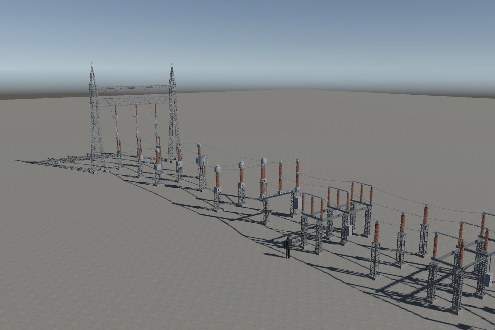
Substation 138 kV Kit
A kit of 14 generic 138 kV substation equipment models at real scale (1 unit = 1 m), with operable parts, connection points on every terminal and a conductor tool, so a whole bay can be assembled and operated inside Unity. Built for URP and Built-in render pipelines, Unity 6000.0 LTS or newer.
14 prefabsbreaker, 3 disconnector types, CT, VT, surge arrester, post insulator, line trap, insulator strings, gantries, power transformer
3 LODsLOD Group, primitive colliders, 8 shared materials (SRP Batcher)
Operable partsdisconnector blades, semi-pantograph arms, cabinet doors (Open / Close / Toggle)
Connection pointson every terminal, plus a ConductorSpan tool with sag and radius
2 scenesa complete line bay (Demo) and a Showcase of every piece
Measured552 k triangles on screen, 1 307 fps average on an RTX 4050 at 1920 × 1080
Gallery
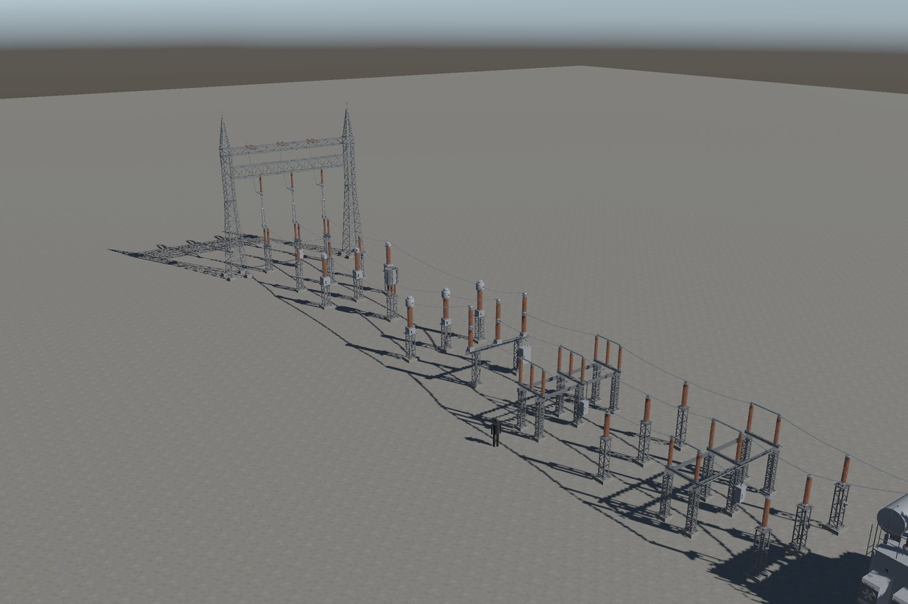
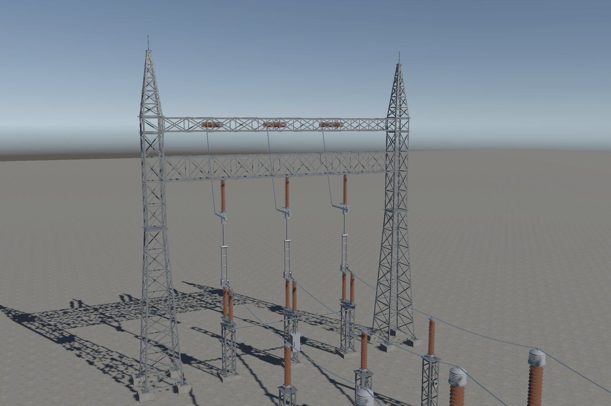
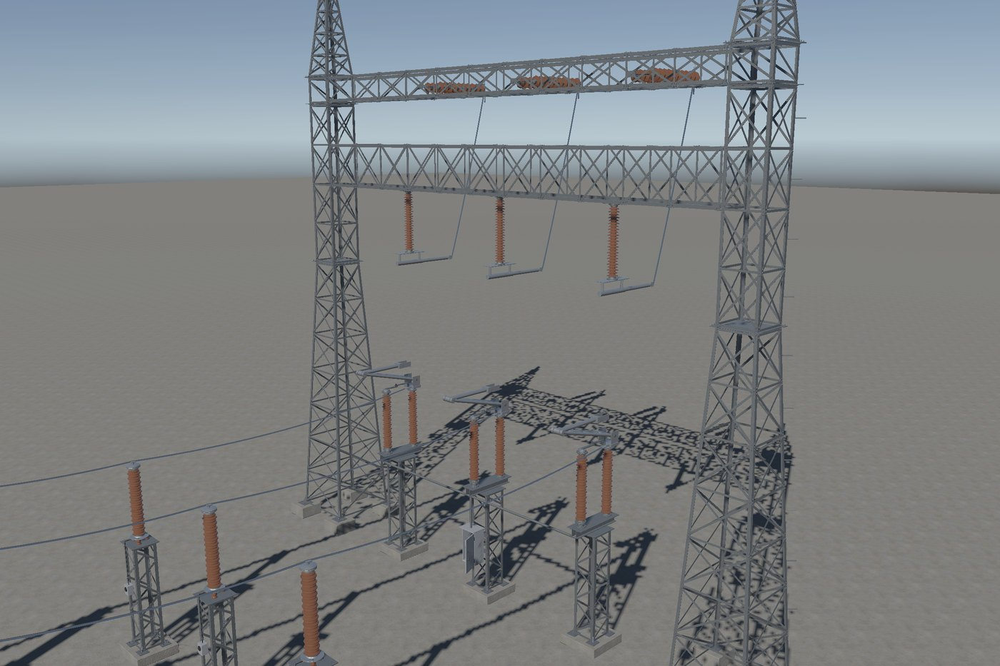
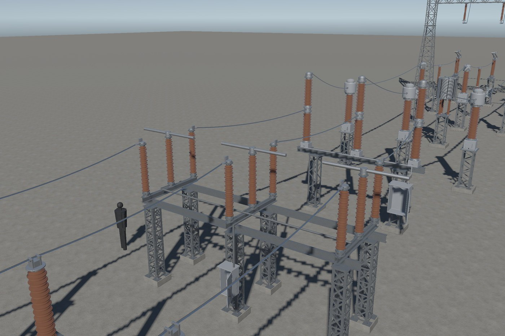
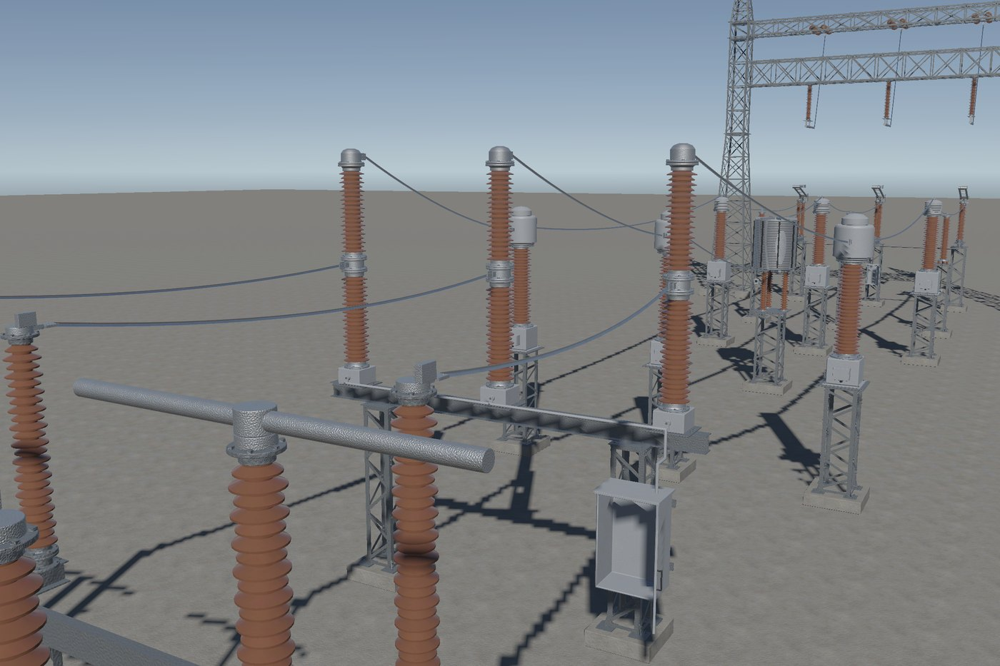
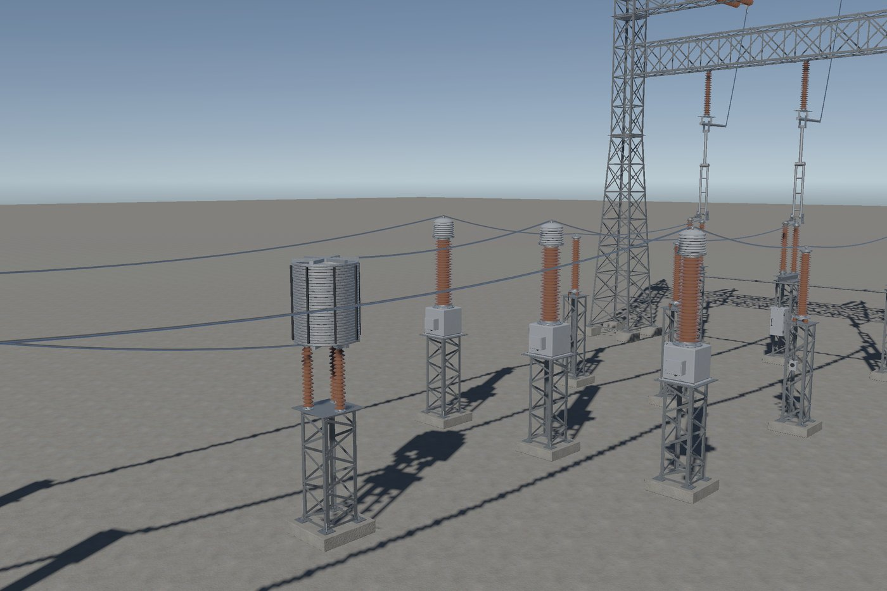
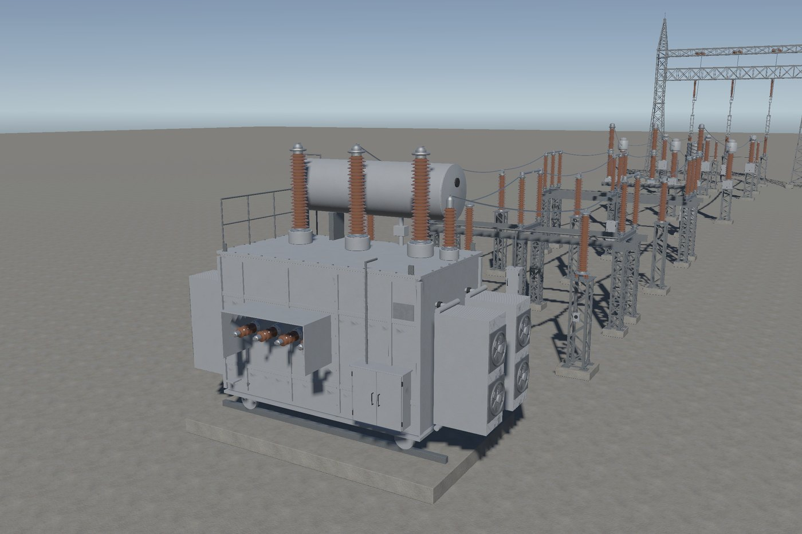
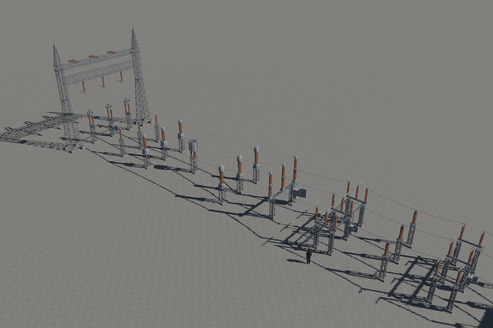
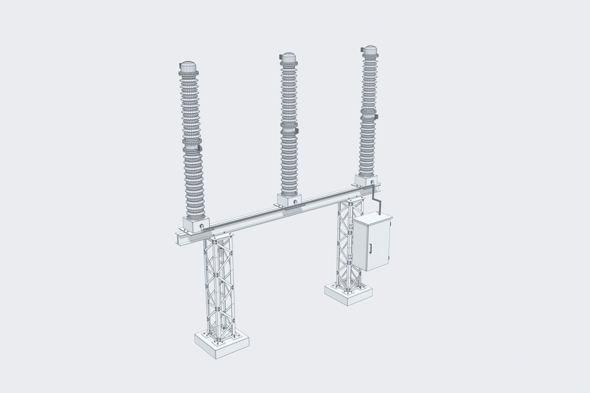
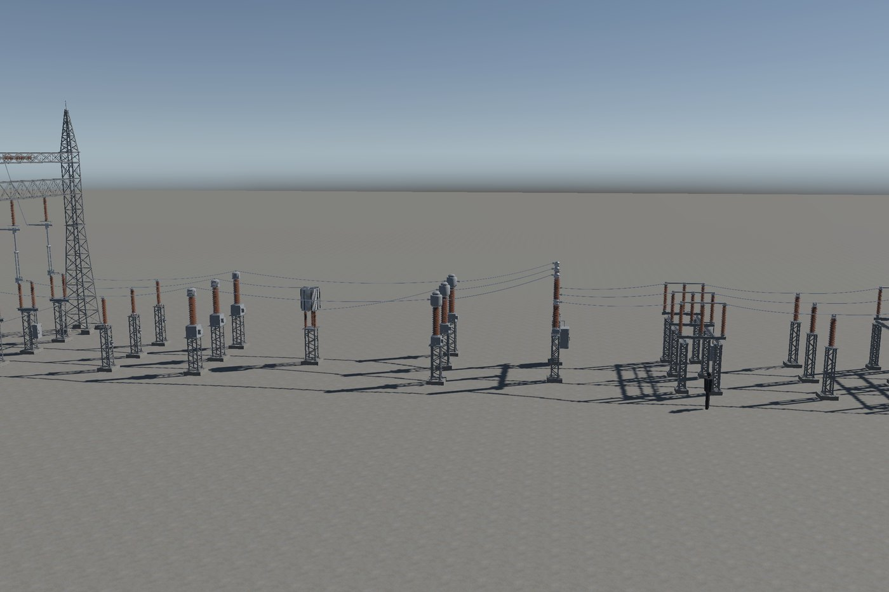
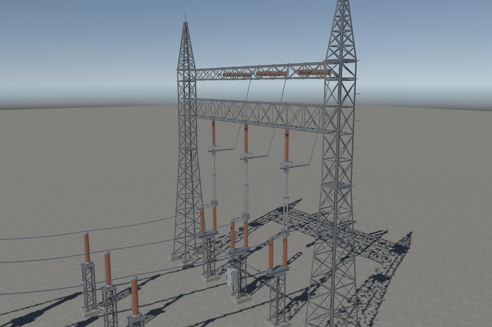
How the assets are made
- Every mesh is generated by the author's own Python toolchain for Blender, from typical 138 kV dimensions. Models are generic, not a manufacturer's product.
- Textures are procedural and tileable (1 m per repetition), with albedo, normal and metallic/smoothness maps.
- Each piece passes an automatic geometry check (scale, normals, penetrations, operable-part travel) before it is accepted.
- Claude (Anthropic) was used as a coding assistant for parts of the toolchain and the C# scripts, under the author's direction and review. No generative AI was used for meshes, textures or images.
About
Arkeh_3D is the publisher name of Bruno Goyatá, who builds digital twins of electrical substations for training in VR and on PC. The kit comes from that work: the same equipment types, the same real-scale rules, made generic for the Asset Store.
Contact